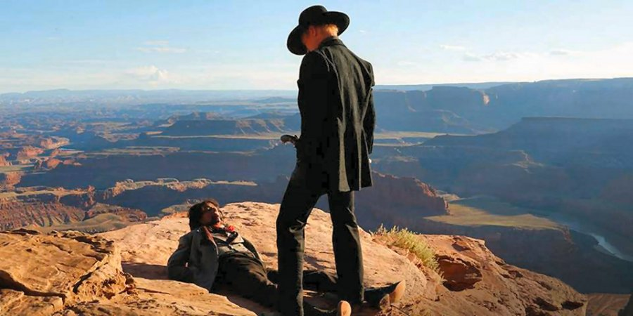

Some of the more seasoned fans of science fiction may remember the cult 1973 sci-fi western-thriller film Westworld, written and directed by novelist Michael Crichton, in which Yul Brynner stars as a sinister android gunslinger who malfunctions and goes on a shooting spree in a futuristic Wild West-themed amusement park.
A remake of Westworld has been under consideration since the early 1990s, but a feature film re-imagining of this coveted sci-fi classic did not materialise. The hopes of the fans were invigorated when in August 2013 it was announced that the TV cable channel HBO had commissioned a pilot for a potential television series based on the story, with Jonathan Nolan directing and co-writing the script in collaboration with his wife Lisa Joy. The powers that be liked the pilot and in November 2014 ordered a full series of the show, that was set to premiere in 2015.
Westworld is a dark odyssey about the dawn
of artificial consciousness and the evolution of sin.
In August 2015, HBO released the first teaser of the upcoming one-hour, ten-episode drama series, with an announcement that the show will premiere sometime in 2016. Since then, the series experienced some hiatus, but according to HBO it is still slated for 2016 debut, and if all goes well, we should see the first episode of the new show sometime during the autumn 2016.

Westworld TV series, that according to its producers is “a dark odyssey about the dawn of artificial consciousness and the evolution of sin, set at the intersection of the near future and the re-imagined past, that explores a world in which every human appetite, no matter how noble or depraved, can be indulged”, will feature a rather impressive line-up of actors led by veteran of the silver screen Sir Anthony Hopkins in a role of Dr. Robert Ford, the brilliant creative director of Westworld theme park.
While you wait for the debut, you can watch the short teaser of the Westworld TV series, released by HBO recently.